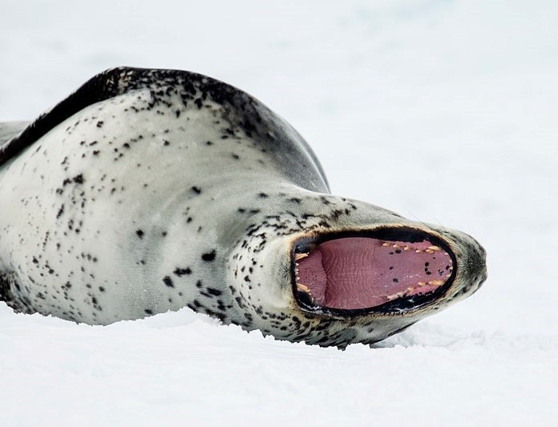
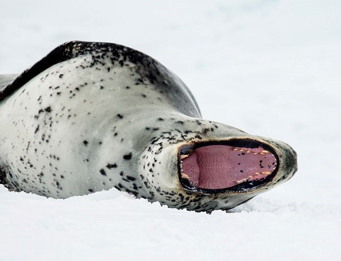

Get Ready to Seal-abrate!
Dive in and Discover the Charm of These Aquatic Wonders
Exploring the World of Seals

Hold onto your flippers, because we're about to embark on a journey into the lives of seals! These adorable aquatic mammals are real stars of the ocean, and they've got some seal-iously cool tales to tell. From Arctic cold to sunny shores, seals have mastered the art of enjoying life both above and below the waves. Let's splash into the deep waters of seal knowledge!
Style and Moves

Seals are known for their elegant swimming skills, often rivalling those of top-tier Olympic swimmers. Their flippers, akin to well-trained athletes, effortlessly guide them through water with a mesmerizing grace.
A fascinating aspect is their natural insulation: layers of blubber. This built-in warmth mechanism allows them to thrive in various water temperatures. Picture these creatures gliding beneath the water's surface – a seamless dance with currents, their streamlined bodies moving with fluidity and elegance. It's a testament to nature's adaptability and the awe-inspiring beauty of aquatic life.
Seal Hangouts

Guess where you can find these fantastic creatures? From the icy polar plunge zones to the sunny coastal chill spots, seals know how to pick their pads. They love lounging on rocky shores, showing off their sun-kissed fur, and occasionally doing the cha-cha-slide into the water.
Meet the Seal Crew


 

Meet the VIPs (Very Important Pinnipeds)! We've got the harbor seal, the grey seal, the elephant seal (yep, the one with the hilarious schnoz), and the fierce leopard seal. It's like a star-studded cast of the ocean! Each has their own quirks and skills, making them the true icons of the underwater red carpet.
Cool Facts About Seals

Dive into the world of seals, those charming sea creatures with a flair for the extraordinary. From holding their breath like underwater champs to using their whiskers for underwater GPS, these marine wonders are quite the showstoppers.
Seals rock the art of breath-holding, making any professional diver green with envy. And those whiskers? They're like nature's very own GPS, guiding these underwater explorers through their aquatic escapades.
For a deeper dive into seal awesomeness, visit sealworld.com